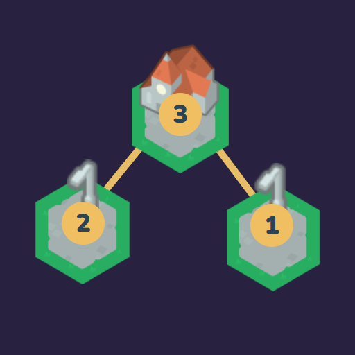

<- all projects

Lantern Links
PC
Volume
Live
Build the bridges. Bring back the tide.
One island holds a melody, and together the islands can bring back the Lantern Tide. Help keeper Iri reconnect a midnight archipelago by building exactly the bridges each island asks for. Each chart is a bridge-building logic puzzle: every island shows how many bridges it needs, bridges run straight and never cross, and every island must end up in one connected network. A lit island has its exact number, a warning marks too many bridges and notes mode marks routes you have ruled out. There is no clock. After a gentle teaching sequence, play 200 charts in three sizes across six story chapters as the lost song returns, plus a daily chart and 90 twilight charts.